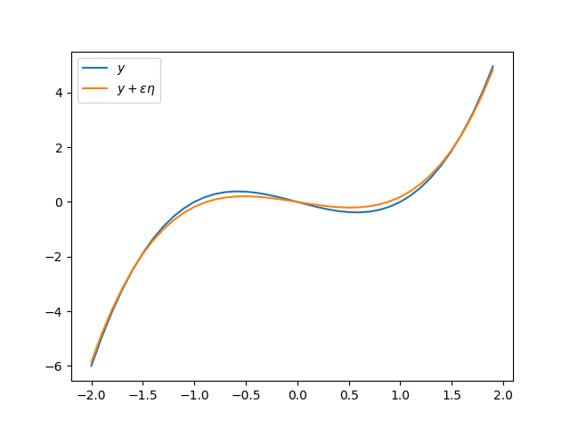

<!DOCTYPE HTML>
<html lang="" >
    <head>
        <meta charset="UTF-8">
        <meta content="text/html; charset=utf-8" http-equiv="Content-Type">
        <title>バイアス・バリアンス分解 · GitBook</title>
        <meta http-equiv="X-UA-Compatible" content="IE=edge" />
        <meta name="description" content="">
        <meta name="generator" content="GitBook 3.2.3">
        
        
        
    
    <link rel="stylesheet" href="../gitbook/style.css">

    
            
                
                <link rel="stylesheet" href="../gitbook/gitbook-plugin-highlight/website.css">
                
            
                
                <link rel="stylesheet" href="../gitbook/gitbook-plugin-search/search.css">
                
            
                
                <link rel="stylesheet" href="../gitbook/gitbook-plugin-fontsettings/website.css">
                
            
        

    

    
        
    
        
    
        
    
        
    
        
    
        
    

        
    
    
    <meta name="HandheldFriendly" content="true"/>
    <meta name="viewport" content="width=device-width, initial-scale=1, user-scalable=no">
    <meta name="apple-mobile-web-app-capable" content="yes">
    <meta name="apple-mobile-web-app-status-bar-style" content="black">
    <link rel="apple-touch-icon-precomposed" sizes="152x152" href="../gitbook/images/apple-touch-icon-precomposed-152.png">
    <link rel="shortcut icon" href="../gitbook/images/favicon.ico" type="image/x-icon">

    
    <link rel="next" href="bayesian_linear.html" />
    
    
    <link rel="prev" href="map_estimation.html" />
    

    </head>
    <body>
        
<div class="book">
    <div class="book-summary">
        
            
<div id="book-search-input" role="search">
    <input type="text" placeholder="Type to search" />
</div>

            
                <nav role="navigation">
                


<ul class="summary">
    
    

    

    
        
        
    
        <li class="chapter " data-level="1.1" data-path="../">
            
                <a href="../">
            
                    
                    Home
            
                </a>
            

            
        </li>
    
        <li class="chapter " data-level="1.2" data-path="multivariable_gaussian.html">
            
                <a href="multivariable_gaussian.html">
            
                    
                    多変数のガウシアン
            
                </a>
            

            
        </li>
    
        <li class="chapter " data-level="1.3" data-path="linear_model.html">
            
                <a href="linear_model.html">
            
                    
                    線形モデル(PRML Chap3)
            
                </a>
            

            
        </li>
    
        <li class="chapter " data-level="1.4" data-path="lagrange_multiplier.html">
            
                <a href="lagrange_multiplier.html">
            
                    
                    ラグランジュ未定係数法
            
                </a>
            

            
        </li>
    
        <li class="chapter " data-level="1.5" data-path="regular_term.html">
            
                <a href="regular_term.html">
            
                    
                    正則化項のお気持ち
            
                </a>
            

            
        </li>
    
        <li class="chapter " data-level="1.6" data-path="map_estimation.html">
            
                <a href="map_estimation.html">
            
                    
                    MAP推定のお話
            
                </a>
            

            
        </li>
    
        <li class="chapter active" data-level="1.7" data-path="bias_variance.html">
            
                <a href="bias_variance.html">
            
                    
                    バイアス・バリアンス分解
            
                </a>
            

            
        </li>
    
        <li class="chapter " data-level="1.8" data-path="bayesian_linear.html">
            
                <a href="bayesian_linear.html">
            
                    
                    ベイス推定から見た線形モデル
            
                </a>
            

            
        </li>
    
        <li class="chapter " data-level="1.9" data-path="evidence.html">
            
                <a href="evidence.html">
            
                    
                    エビデンス
            
                </a>
            

            
        </li>
    

    

    <li class="divider"></li>

    <li>
        <a href="https://www.gitbook.com" target="blank" class="gitbook-link">
            Published with GitBook
        </a>
    </li>
</ul>


                </nav>
            
        
    </div>

    <div class="book-body">
        
            <div class="body-inner">
                
                    

<div class="book-header" role="navigation">
    

    <!-- Title -->
    <h1>
        <i class="fa fa-circle-o-notch fa-spin"></i>
        <a href=".." >バイアス・バリアンス分解</a>
    </h1>
</div>


                    <div class="page-wrapper" tabindex="-1" role="main">
                        <div class="page-inner">
                            
<div id="book-search-results">
    <div class="search-noresults">
    
                                <section class="normal markdown-section">
                                
                                <h1 id="&#x30D0;&#x30A4;&#x30A2;&#x30B9;&#x30FB;&#x30D0;&#x30EA;&#x30A2;&#x30F3;&#x30B9;&#x5206;&#x89E3;">&#x30D0;&#x30A4;&#x30A2;&#x30B9;&#x30FB;&#x30D0;&#x30EA;&#x30A2;&#x30F3;&#x30B9;&#x5206;&#x89E3;</h1>
<p>&#x89B3;&#x6E2C;&#x30C7;&#x30FC;&#x30BF;&#x306E;&#x96C6;&#x5408; <script type="math/tex; ">\mathcal{D}_N=\{(\boldsymbol{x}_n,y_n)\, |\, n=1,2,\dots,N\}</script> &#x304B;&#x3089;&#x5B66;&#x7FD2;&#x3055;&#x308C;&#x305F;&#x30E2;&#x30C7;&#x30EB;&#x306B;&#x304A;&#x3044;&#x3066;, &#x65B0;&#x3057;&#x3044;&#x30C7;&#x30FC;&#x30BF; <script type="math/tex; ">\boldsymbol{x}</script> &#x306B;&#x5BFE;&#x3057;&#x3066; <script type="math/tex; ">y</script> &#x306E;&#x4E88;&#x6E2C;&#x3059;&#x308B;&#x4E88;&#x6E2C;&#x5024;
<script type="math/tex; ">y(\boldsymbol{x})</script> &#x306E;&#x771F;&#x306E;&#x5024; <script type="math/tex; ">y_t</script> &#x306E;&#x30BA;&#x30EC;&#x3092;&#x640D;&#x5931;&#x3068;&#x3044;&#x3046;. &#x3053;&#x3053;&#x3067;&#x306F;&#x30BA;&#x30EC;&#x306E;&#x6307;&#x6A19;&#x3068;&#x3057;&#x3066;&#x4E8C;&#x4E57;&#x8AA4;&#x5DEE; <script type="math/tex; ">\mathcal{L}(y(\boldsymbol{x}))=(y(\boldsymbol{x})-y_t)^2</script> &#x306B;&#x3064;&#x3044;&#x3066;&#x8003;&#x3048;&#x308B;. &#x3053;&#x308C;&#x306F; <script type="math/tex; ">y</script> &#x306B;&#x3064;&#x3044;&#x3066;&#x306E;&#x6C4E;&#x95A2;&#x6570;&#x306B;&#x306A;&#x3063;&#x3066;&#x3044;&#x308B;. <script type="math/tex; ">p(\boldsymbol{x},y_t)</script> &#x3092; <script type="math/tex; ">\boldsymbol{x}</script> &#x3068; <script type="math/tex; ">y_t</script> &#x306E;&#x540C;&#x6642;&#x5206;&#x5E03;&#x3068;&#x304A;&#x304F;. &#x640D;&#x5931;&#x51FD;&#x6570;&#x306E;&#x671F;&#x5F85;&#x5024;&#x306F;&#x6B21;&#x3067;&#x4E0E;&#x3048;&#x3089;&#x308C;&#x308B;.</p>
<p><script type="math/tex; mode=display">
\mathbb{E}[\mathcal{L}(y)]=\iint (y(\boldsymbol{x})-y_t)^2p(\boldsymbol{x},y_t)\, dy_td\boldsymbol{x}
</script></p>
<p>&#x5B9A;&#x7FA9;&#x306B;&#x3088;&#x308A;&#x69D8;&#x3005;&#x306A; <script type="math/tex; ">\boldsymbol{x}</script> &#x3092;&#x89B3;&#x6E2C;&#x3057;&#x305F;&#x969B;&#x306E; <script type="math/tex; ">y(\boldsymbol{x})</script> &#x3068; <script type="math/tex; ">y_t</script> &#x306E;&#x30BA;&#x30EC;&#x306E;&#x5E73;&#x5747;&#x3092;&#x8868;&#x3057;&#x3066;&#x3044;&#x308B;.</p>
<h2 id="&#x30BA;&#x30EC;&#x3092;&#x6700;&#x5C0F;&#x306B;&#x3059;&#x308B;&#x51FD;&#x6570;">&#x30BA;&#x30EC;&#x3092;&#x6700;&#x5C0F;&#x306B;&#x3059;&#x308B;&#x51FD;&#x6570;</h2>
<p>&#x3053;&#x306E;&#x30BA;&#x30EC;&#x3092;&#x6700;&#x5C0F;&#x306B;&#x3059;&#x308B; <script type="math/tex; ">y=y(\boldsymbol{x})</script> &#x306F;&#x6B21;&#x306E;&#x3088;&#x3046;&#x306B;&#x66F8;&#x3051;&#x308B;:</p>
<p><script type="math/tex; mode=display">
\underset{y}{\mathrm{argmax}}\, \mathbb{E}[\mathcal{L}(y)] = \mathbb{E}[y_t|\boldsymbol{x}] = \int y_t p(y_t|\boldsymbol{x})dy_t
</script></p>
<p>&#x8A3C;&#x660E;</p>
<p>&#x3044;&#x307E;, <script type="math/tex; ">y: \boldsymbol{x} \mapsto y(\boldsymbol{x})</script> &#x304C; <script type="math/tex; ">E[\mathcal{L}(y)]</script> &#x3092;&#x6700;&#x5C0F;&#x306B;&#x3059;&#x308B;&#x3082;&#x306E;&#x3068;&#x3059;&#x308B;. &#x3053;&#x306E; <script type="math/tex; ">y</script> &#x306B;&#x826F;&#x3044;&#x6761;&#x4EF6;&#x3092;&#x6301;&#x3064; (e.g. &#x5341;&#x5206;&#x6ED1;&#x3089;&#x304B;&#x306A;) &#x30C6;&#x30B9;&#x30C8;&#x51FD;&#x6570; <script type="math/tex; ">\eta</script> &#x3092;&#x308F;&#x305A;&#x304B;&#x306B;&#x4ED8;&#x4E0E;, &#x3059;&#x306A;&#x308F;&#x3061;&#x5341;&#x5206;&#x306B;&#x5C0F;&#x3055;&#x3044; <script type="math/tex; ">\varepsilon</script> &#x3092;&#x7528;&#x3044;&#x3066; <script type="math/tex; ">y+\varepsilon\eta</script>, &#x306A;&#x308B;&#x3082;&#x306E;&#x3092;&#x8003;&#x3048;&#x308B;. &#x3053;&#x306E;&#x3068;&#x304D;</p>
<p><script type="math/tex; mode=display">
\lim_{\varepsilon\to 0} \frac{\mathbb{E}[\mathcal{L}(y+\varepsilon\eta)]-\mathbb{E}[\mathcal{L}(y)]}{\varepsilon}= \left.\frac{\partial}{\partial\varepsilon}\mathbb{E}[\mathcal{L}(y+\varepsilon\eta)]\right|_{\varepsilon=0}= 0
</script></p>
<p>&#x3092;&#x8981;&#x8ACB;&#x3059;&#x308B; (&#x5E73;&#x305F;&#x304F;&#x3044;&#x3046;&#x3068;&#x6C4E;&#x95A2;&#x6570; <script type="math/tex; ">\mathbb{E}[\mathcal{L}(\cdot)]</script> &#x306E;&#x6975;&#x5024;).</p>
<p></p>
<p>&#x4E8C;&#x4E57;&#x640D;&#x5931;&#x306E;&#x5834;&#x5408;&#x306F;&#x6B21;&#x306E;&#x3088;&#x3046;&#x306B;&#x6975;&#x5024;&#x3092;&#x3068;&#x308B; <script type="math/tex; ">y</script> &#x3092;&#x8A08;&#x7B97;&#x3059;&#x308B;:</p>
<p><script type="math/tex; mode=display">
\begin{align}
\left.\frac{\partial}{\partial\varepsilon}\mathbb{E}[\mathcal{L}(y+\varepsilon\eta)]\right|_{\varepsilon=0}
&=
\left.\iint \frac{\partial}{\partial \varepsilon}(y+\varepsilon\eta-y_t)^2p(\boldsymbol{x},y_t)\, dy_td\boldsymbol{x}\right|_{\varepsilon=0}\\
&=
\left.\iint 2\eta(\boldsymbol{x})(y+\varepsilon\eta-y_t)p(\boldsymbol{x},y_t)dy_td\boldsymbol{x}\right|_{\varepsilon=0}\\
&=
2\int\left(\int (y(\boldsymbol{x})-y_t)p(\boldsymbol{x},y_t)dy_t\right) \eta(\boldsymbol{x})d\boldsymbol{x}
\end{align}
</script></p>
<p>&#x3053;&#x308C;&#x304C;&#x4EFB;&#x610F;&#x306E; <script type="math/tex; ">\eta(\boldsymbol{x})</script> &#x306B;&#x3064;&#x3044;&#x3066; 0 &#x3092;&#x8981;&#x8ACB;&#x3059;&#x308B;&#x3068;</p>
<p><script type="math/tex; mode=display">
\int (y(\boldsymbol{x})-y_t)p(\boldsymbol{x},y_t)dy_t=0 \quad \mathrm{for\ all\ } \boldsymbol{x}
</script></p>
<p>&#x3088;&#x3063;&#x3066;</p>
<p><script type="math/tex; mode=display">
y(x)p(\boldsymbol{x}) = y(\boldsymbol{x})\int p(x,y_t)dy_t = \int y_tp(\boldsymbol{x},y_t)dy_t
</script></p>
<p>&#x3086;&#x3048;&#x306B;</p>
<p><script type="math/tex; mode=display">
y(\boldsymbol{x}) = \int y_t \frac{p(\boldsymbol{x},y_t)}{p(\boldsymbol{x})} dy_t = \int y_t p(y_t|\boldsymbol{x})dy_t = \mathbb{E}[y_t|\boldsymbol{x}].
</script></p>
<h2 id="&#x7406;&#x60F3;&#x304B;&#x3089;&#x306E;&#x4E56;&#x96E2;">&#x7406;&#x60F3;&#x304B;&#x3089;&#x306E;&#x4E56;&#x96E2;</h2>
<p>&#x4E0A;&#x8A18;&#x306E;&#x8B70;&#x8AD6;&#x304B;&#x3089; <script type="math/tex; ">\mathbb{E}[y_t|\boldsymbol{x}]</script> &#x304C;&#x30BA;&#x30EC;&#x3092;&#x3082;&#x3063;&#x3068;&#x3082;&#x6700;&#x5C0F;&#x306B;&#x3059;&#x308B;&#x7406;&#x60F3;&#x306A;&#x51FD;&#x6570;&#x3067;&#x3042;&#x308B;. &#x5B66;&#x7FD2;&#x306B;&#x3088;&#x3063;&#x3066;&#x5F97;&#x3089;&#x308C;&#x305F; <script type="math/tex; ">y(\boldsymbol{x})</script> &#x306B;&#x95A2;&#x3057;&#x3066;&#x306E; <script type="math/tex; ">\mathbb{E}[\mathcal{L}(y)]</script> &#x3092;&#x6B21;&#x306E;&#x3088;&#x3046;&#x306B;&#x5206;&#x89E3;&#x3067;&#x304D;&#x308B;:</p>
<p><script type="math/tex; mode=display">
\begin{align}
\mathbb{E}[\mathcal{L}]
&=
\int (y-y_t)^2p(\boldsymbol{x},y_t)dy_td\boldsymbol{x}\\
&=
\int (y(\boldsymbol{x})-\mathbb{E}[y_t|\boldsymbol{x}])^2 p(\boldsymbol{x}) d\boldsymbol{x}+
\iint (\mathbb{E}[y_t|\boldsymbol{x}]-y_t)^2 p(\boldsymbol{x},y_t)dy_td\boldsymbol{x}.
\end{align}
</script></p>
<p>&#x8A3C;&#x660E;</p>
<p>&#x640D;&#x5931;&#x51FD;&#x6570;&#x3092; <script type="math/tex; ">E[y_t|\boldsymbol{x}]</script> &#x3092;&#x4ECB;&#x3057;&#x3066;&#x5206;&#x89E3;&#x3059;&#x308B;.</p>
<p><script type="math/tex; mode=display">
\begin{align}
\mathcal{L}(y)
&=
(y(\boldsymbol{x})-y_t)^2 \\
&=
(y(\boldsymbol{x})-\mathbb{E}[y_t|\mathbb{x}]+\mathbb{E}[y_t|\boldsymbol{x}]-y_t)^2 \\
&=
(y(\boldsymbol{x})-\mathbb{E}[y_t|\mathbb{x}])^2 +
2(y(\boldsymbol{x})-\mathbb{E}[y_t|\boldsymbol{x}])(\mathbb{E}[y_t|\boldsymbol{x}]-y_t)
+(\mathbb{E}[y_t|\boldsymbol{x}]-y_t)^2
\end{align}
</script></p>
<p>&#x3053;&#x306E;&#x3068;&#x304D;</p>
<p><script type="math/tex; mode=display">
\iint (y(\boldsymbol{x})-\mathbb{E}[y_t|\boldsymbol{x}])(\mathbb{E}[y_t|\boldsymbol{x}]-y_t)p(\boldsymbol{x},y_t) dy_td\boldsymbol{x}=0
</script></p>
<p>&#x304C;&#x308F;&#x304B;&#x308B;.&#x5B9F;&#x969B;,</p>
<p><script type="math/tex; mode=display">
\begin{align}
\iint
(y(\boldsymbol{x})-\mathbb{E}[y_t|\boldsymbol{x}])(\mathbb{E}[y_t|\boldsymbol{x}]-y_t)
p(\boldsymbol{x},y_t)
dy_td\boldsymbol{x}
&=
\int (y(\boldsymbol{x})-\mathbb{E}[y_t|\boldsymbol{x}])
\left(\int
(\mathbb{E}[y_t|\boldsymbol{x}]-y_t)p(\boldsymbol{x},y_t)
dy_t\right)
d\boldsymbol{x}.
\end{align}
</script></p>
<p>&#x7279;&#x306B;</p>
<p><script type="math/tex; mode=display">
\begin{align}
\int (\mathbb{E}[y_t|\boldsymbol{x}]-y_t)p(\boldsymbol{x},y_t)dy_t
&=
\mathbb{E}[y_t|\boldsymbol{x}]\int p(\boldsymbol{x},y_t)dy_t - p(\boldsymbol{x})\int y_t \frac{p(\boldsymbol{x},y_t)}{p(\boldsymbol{x})}dy_t \\
&=
\mathbb{E}[y_t|\boldsymbol{x}]p(\boldsymbol{x}) - p(\boldsymbol{x})\mathbb{E}[y_t|\boldsymbol{x}]
=0
\end{align}
</script></p>
<p>&#x3053;&#x308C;&#x3068;</p>
<p><script type="math/tex; mode=display">
\begin{align}
\iint (y(\boldsymbol{x})-\mathbb{E}[y_t|\boldsymbol{x}]) p(x,y_t) dy_td\boldsymbol{x}
&=
\int (y(\boldsymbol{x})-\mathbb{E}[y_t|\boldsymbol{x}])\left(\int p(x,y_t) dy_t\right)d\boldsymbol{x}\\
&=
\int (y(\boldsymbol{x})-\mathbb{E}[y_t|\boldsymbol{x}])^2 p(\boldsymbol{x}) d\boldsymbol{x}.
\end{align}
</script></p>
<p>&#x304B;&#x3089;&#x793A;&#x3057;&#x305F;&#x3044;&#x3053;&#x3068;&#x304C;&#x793A;&#x3055;&#x308C;&#x308B;.</p>
<h1 id="&#x30C7;&#x30FC;&#x30BF;&#x3054;&#x3068;&#x306B;&#x5B9A;&#x307E;&#x308B;&#x30E2;&#x30C7;&#x30EB;&#x306B;&#x95A2;&#x3059;&#x308B;&#x671F;&#x5F85;&#x5024;">&#x30C7;&#x30FC;&#x30BF;&#x3054;&#x3068;&#x306B;&#x5B9A;&#x307E;&#x308B;&#x30E2;&#x30C7;&#x30EB;&#x306B;&#x95A2;&#x3059;&#x308B;&#x671F;&#x5F85;&#x5024;</h1>
<p><script type="math/tex; mode=display">
\mathbb{E}[\mathcal{L(y)}]=
\int (y(\boldsymbol{x})-\mathbb{E}[y_t|\boldsymbol{x}])^2 p(\boldsymbol{x}) d\boldsymbol{x}+
\iint (\mathbb{E}[y_t|\boldsymbol{x}]-y_t)^2 p(\boldsymbol{x},y_t)dy_td\boldsymbol{x}.
</script></p>
<p>&#x307E;&#x3067;&#x5206;&#x89E3;&#x3067;&#x304D;&#x305F;.</p>
<p>&#x3068;&#x3053;&#x308D;&#x3067;, &#x30E2;&#x30C7;&#x30EB;&#x306E;&#x7279;&#x6027;&#x306F;(&#x30A2;&#x30EB;&#x30B4;&#x30EA;&#x30BA;&#x30E0;&#x3092;&#x4E00;&#x3064;&#x56FA;&#x5B9A;&#x3057;&#x305F;&#x5834;&#x5408;), &#x30C7;&#x30FC;&#x30BF;&#x306B;&#x3088;&#x3063;&#x3066;&#x6C7A;&#x307E;&#x308B;. &#x4EE5;&#x4E0B;&#x30C7;&#x30FC;&#x30BF; <script type="math/tex; ">\mathcal{D}</script> &#x3092;&#x30D1;&#x30E9;&#x30E1;&#x30FC;&#x30BF;&#x3068;&#x3057;&#x3066; <script type="math/tex; ">y=y(\boldsymbol{x}; \mathcal{D})</script> &#x3068;&#x660E;&#x793A;&#x3059;&#x308B;. <script type="math/tex; ">D</script> &#x306B;&#x5BFE;&#x3057;&#x3066;&#x30E2;&#x30C7;&#x30EB; <script type="math/tex; ">y(\cdot;\mathcal{D})</script> &#x3092;&#x6C42;&#x3081;, &#x305D;&#x308C;&#x306E;&#x5E73;&#x5747;&#x3092; <script type="math/tex; ">\mathbb{E}[y(\cdot;\mathcal{D})]</script> &#x3068;&#x7F6E;&#x304F;.&#x3053;&#x306E;&#x3068;&#x304D;&#x4E8C;&#x4E57;&#x8AA4;&#x5DEE;&#x3092;&#x6B21;&#x306E;&#x3088;&#x3046;&#x306B;&#x5909;&#x5F62;&#x3059;&#x308B;:

<script type="math/tex; mode=display">
\begin{align}
(y(\boldsymbol{x})-\mathbb{E}[y_t|\boldsymbol{x}])^2
&=
(y(\boldsymbol{x})-\mathbb{E}_\mathcal{D}[y(\boldsymbol{x};\mathcal{D})]+\mathbb{E}_\mathcal{D}[y(\boldsymbol{x};\mathcal{D})]-\mathbb{E}[y_t|\boldsymbol{x}])^2\\
&=
(y(\boldsymbol{x})-\mathbb{E}_\mathcal{D}[y(\boldsymbol{x};\mathcal{D})])^2
+
2(y(\boldsymbol{x})-\mathbb{E}_\mathcal{D}[y(\boldsymbol{x};\mathcal{D})])(\mathbb{E}_\mathcal{D}[y(\boldsymbol{x};\mathcal{D})]-\mathbb{E}[y_t|\boldsymbol{x}])
+(\mathbb{E}_\mathcal{D}[y(\boldsymbol{x};\mathcal{D})]-\mathbb{E}[y_t|\boldsymbol{x}])^2.
\end{align}
</script></p>
<p>&#x7B2C;&#x4E8C;&#x9805;&#x306B;&#x95A2;&#x3057;&#x3066; <script type="math/tex; ">\mathbb{E}_\mathcal{D}[\cdot]</script> &#x3092;&#x8A08;&#x7B97;&#x3059;&#x308B;&#x3068;</p>
<p><script type="math/tex; mode=display">
\begin{align}
\mathbb{E}_\mathcal{D}[(y(\boldsymbol{x})-\mathbb{E}_\mathcal{D}[y(\boldsymbol{x};\mathcal{D})])(\mathbb{E}_\mathcal{D}[y(\boldsymbol{x};\mathcal{D})]-\mathbb{E}[y_t|\boldsymbol{x}])]
&=
\mathbb{E}_\mathcal{D}[y(\boldsymbol{x};\mathcal{D})-\mathbb{E}_\mathcal{D}[y(\boldsymbol{x};\mathcal{D})]](\mathbb{E}_\mathcal{D}[y(\boldsymbol{x};\mathcal{D}]-\mathbb{E}[y_t|\boldsymbol{x}])\\
&=
\underset{=0}{\underbrace{(\mathbb{E}_\mathcal{D}[y(\boldsymbol{x};\mathcal{D})]-\mathbb{E}_\mathcal{D}[y(\boldsymbol{x};\mathcal{D})])}}(\mathbb{E}_\mathcal{D}[y(\boldsymbol{x};\mathcal{D}]-\mathbb{E}[y_t|\boldsymbol{x}])
=0
\end{align}
</script></p>
<p>&#x3088;&#x3063;&#x3066;</p>
<p><script type="math/tex; mode=display">
\mathbb{E}_\mathcal{D}[(y(\boldsymbol{x};\mathcal{D})-\mathbb{E}[y_t|\boldsymbol{x}])^2]
=
\mathbb{E}_\mathcal{D}[(y(\boldsymbol{x})-\mathbb{E}_\mathcal{D}[y(\boldsymbol{x};\mathcal{D})])^2]+
\mathbb{E}_\mathcal{D}[(\mathbb{E}_\mathcal{D}[y(\boldsymbol{x};\mathcal{D})]-\mathbb{E}[y_t|\boldsymbol{x}])^2]
</script></p>
<p>&#x3068;&#x306A;&#x308B;. &#xFF11;&#x9805;&#x76EE;
&#x3092;&#x30D0;&#x30EA;&#x30A2;&#x30F3;&#x30B9;&#x3068;&#x3044;&#x3046;&#x3002;
&#x7B2C;&#xFF12;&#x9805;&#x76EE;&#x3092;&#x4E8C;&#x4E57;&#x30D0;&#x30A4;&#x30A2;&#x30B9;&#x3068;&#x3044;&#x3046;.</p>
<h1 id="&#x3053;&#x308C;&#x3089;&#x306E;&#x304A;&#x6C17;&#x6301;&#x3061;">&#x3053;&#x308C;&#x3089;&#x306E;&#x304A;&#x6C17;&#x6301;&#x3061;</h1>
<ul>
<li><p>&#x30D0;&#x30A4;&#x30A2;&#x30B9;&#x306F;&#x7406;&#x60F3;&#x7684;&#x306A; <script type="math/tex; ">\mathbb{E}[y_t|\boldsymbol{x}]</script> &#x3068;&#x69D8;&#x3005;&#x306A;&#x30C7;&#x30FC;&#x30BF;&#x3092;&#x7528;&#x3044;&#x3066;&#x5B66;&#x7FD2;&#x3055;&#x305B;&#x305F;&#x30E2;&#x30C7;&#x30EB;&#x306E;&#x51FA;&#x529B;&#x5024;&#x3068;&#x306E;&#x305A;&#x308C;&#x3092;&#x8868;&#x3057;&#x3001;&#x624B;&#x6CD5;&#x81EA;&#x4F53;&#x306E;&#x30BA;&#x30EC;&#x3092;&#x8868;&#x3059;.</p>
</li>
<li><p>&#x30D0;&#x30EA;&#x30A2;&#x30F3;&#x30B9;&#x306F;&#x7279;&#x5B9A;&#x306E;&#x30C7;&#x30FC;&#x30BF;&#x3067;&#x5F97;&#x305F;&#x30E2;&#x30C7;&#x30EB; <script type="math/tex; ">y=y(\boldsymbol{x})</script> &#x3068;&#x5168;&#x3066;&#x306E;&#x30C7;&#x30FC;&#x30BF;&#x306E;&#x3068;&#x308A;&#x304B;&#x305F;&#x306B;&#x3064;&#x3044;&#x3066;&#x306E;&#x4E88;&#x6E2C;&#x5024;&#x3068;&#x306E;&#x30BA;&#x30EC;&#x306E;&#x5E73;&#x5747;&#x3092;&#x8868;&#x3059;.</p>
</li>
<li><p>&#x30CE;&#x30A4;&#x30BA;</p>
</li>
</ul>
<p><script type="math/tex; mode=display">
\iint (\mathbb{E}[y_t|\boldsymbol{x}]-y_t)^2 p(\boldsymbol{x},y_t)dy_td\boldsymbol{x}
</script></p>
<p>&#x7406;&#x60F3;&#x7684;&#x306A;&#x51FD;&#x6570;&#x3068;&#x5B9F;&#x969B;&#x306E;&#x5024;&#x3068;&#x306E;&#x30BA;&#x30EC;&#x3092;&#x8868;&#x3057;&#x3066;&#x3044;&#x308B;.</p>
<p>&#x30E2;&#x30C7;&#x30EB;&#x306E;&#x8907;&#x96D1;&#x3055;&#x306B;&#x3088;&#x3063;&#x3066;&#x3053;&#x308C;&#x3089;&#x306E;&#x5024;&#x304C;&#x5909;&#x5316;&#x3059;&#x308B;.PRML&#x306A;&#x3069;&#x3067;&#x306F;&#x6B63;&#x5247;&#x5316;&#x9805;&#x306E;&#x5BC4;&#x4E0E; (&#x8981;&#x3059;&#x308B;&#x306B; <script type="math/tex; ">\lambda</script> ) &#x3092;&#x5909;&#x5316;&#x3055;&#x305B;&#x3066;&#x30D0;&#x30A4;&#x30A2;&#x30B9;&#x3068;&#x30D0;&#x30EA;&#x30A2;&#x30F3;&#x30B9;&#x306E;&#x30C8;&#x30EC;&#x30FC;&#x30C9;&#x30AA;&#x30D5;&#x3092;&#x8B70;&#x8AD6;&#x3057;&#x3066;&#x3044;&#x308B;.</p>
<h1 id="&#x30D0;&#x30A4;&#x30A2;&#x30B9;&#x30FB;&#x30D0;&#x30EA;&#x30A2;&#x30F3;&#x30B9;&#x5206;&#x89E3;&#x306F;&#x8D05;&#x6CA2;&#x3060;">&#x30D0;&#x30A4;&#x30A2;&#x30B9;&#x30FB;&#x30D0;&#x30EA;&#x30A2;&#x30F3;&#x30B9;&#x5206;&#x89E3;&#x306F;&#x8D05;&#x6CA2;&#x3060;(?).</h1>
<p>&#x983B;&#x5EA6;&#x4E3B;&#x7FA9;&#x306B;&#x57FA;&#x3065;&#x3044;&#x305F;&#x7ACB;&#x5834;&#x3067;&#x306F;&#x30D0;&#x30A4;&#x30A2;&#x30B9;&#x30FB;&#x30D0;&#x30EA;&#x30A2;&#x30F3;&#x30B9;&#x5206;&#x89E3;&#x306B;&#x3088;&#x3063;&#x3066;&#x30E2;&#x30C7;&#x30EB;&#x306E;&#x8907;&#x96D1;&#x3055;&#x306E;&#x554F;&#x984C;&#x3078;&#x306E;&#x89E3;&#x91C8;&#x3092;&#x5F97;&#x308B;&#x3002;&#x3068;&#x306F;&#x3044;&#x3048;&#x3001;&#x30D0;&#x30A4;&#x30A2;&#x30B9;&#x30FB;&#x30D0;&#x30EA;&#x30A2;&#x30F3;&#x30B9;&#x5206;&#x89E3;&#x304C;&#x30C7;&#x30FC;&#x30BF;&#x306E;&#x9078;&#x629E;&#x306E;&#x5E73;&#x5747;&#x306B;&#x3088;&#x3063;&#x3066;&#x5C55;&#x958B;&#x3055;&#x308C;&#x308B;&#x8B70;&#x8AD6;&#x306E;&#x305F;&#x3081;, &#x5B9F;&#x969B;&#x554F;&#x984C;1&#x7D44;&#x306E;&#x89B3;&#x6E2C;&#x30C7;&#x30FC;&#x30BF;&#x3057;&#x304B;&#x4E0E;&#x3048;&#x3089;&#x308C;&#x3066;&#x3044;&#x306A;&#x3044;&#x73FE;&#x5B9F;&#x7684;&#x306A;&#x5834;&#x9762;&#x3067;&#x306F;&#x6709;&#x7528;&#x6027;&#x304C;&#x9650;&#x3089;&#x308C;&#x308B;&#xFF08;&#x305D;&#x308A;&#x3083;&#x305D;&#x3046;&#x3060;&#x30FB;&#x30FB;&#x30FB;&#xFF09;.
&#x305D;&#x3082;&#x305D;&#x3082;&#x3001;&#x305D;&#x308C;&#x306A;&#x308A;&#x306E;&#x30B5;&#x30A4;&#x30BA;&#x3092;&#x6301;&#x3064;&#x72EC;&#x7ACB;&#x306A;&#x5B66;&#x7FD2;&#x30C7;&#x30FC;&#x30BF;&#x304C;&#x3042;&#x308C;&#x3070;&#x30D0;&#x30A4;&#x30A2;&#x30B9;&#x30FB;&#x30D0;&#x30EA;&#x30A2;&#x30F3;&#x3059;&#x5206;&#x89E3;&#x4E91;&#x3005;&#x3092;&#x8B70;&#x8AD6;&#x3059;&#x308B;&#x3088;&#x308A;&#x305D;&#x308C;&#x3089;&#x3092;&#x307E;&#x3068;&#x3081;&#x3066;&#x4E00;&#x3064;&#x306E;&#x5B66;&#x7FD2;&#x30C7;&#x30FC;&#x30BF;&#x3068;&#x3057;&#x3001;&#x305D;&#x308C;&#x3092;&#x5B66;&#x7FD2;&#x3055;&#x305B;&#x308C;&#x3070;&#x3044;&#x3044;&#x306E;&#x3067;&#x306F;&#x3068;&#x3044;&#x3046;&#x6C17;&#x6301;&#x3061;&#x306B;&#x306A;&#x308B;.</p>

                                
                                </section>
                            
    </div>
    <div class="search-results">
        <div class="has-results">
            
            <h1 class="search-results-title"><span class='search-results-count'></span> results matching "<span class='search-query'></span>"</h1>
            <ul class="search-results-list"></ul>
            
        </div>
        <div class="no-results">
            
            <h1 class="search-results-title">No results matching "<span class='search-query'></span>"</h1>
            
        </div>
    </div>
</div>

                        </div>
                    </div>
                
            </div>

            
                
                <a href="map_estimation.html" class="navigation navigation-prev " aria-label="Previous page: MAP推定のお話">
                    <i class="fa fa-angle-left"></i>
                </a>
                
                
                <a href="bayesian_linear.html" class="navigation navigation-next " aria-label="Next page: ベイス推定から見た線形モデル">
                    <i class="fa fa-angle-right"></i>
                </a>
                
            
        
    </div>

    <script>
        var gitbook = gitbook || [];
        gitbook.push(function() {
            gitbook.page.hasChanged({"page":{"title":"バイアス・バリアンス分解","level":"1.7","depth":1,"next":{"title":"ベイス推定から見た線形モデル","level":"1.8","depth":1,"path":"src/bayesian_linear.md","ref":"src/bayesian_linear.md","articles":[]},"previous":{"title":"MAP推定のお話","level":"1.6","depth":1,"path":"src/map_estimation.md","ref":"src/map_estimation.md","articles":[]},"dir":"ltr"},"config":{"gitbook":"*","theme":"default","variables":{},"plugins":["mathjax"],"pluginsConfig":{"mathjax":{"forceSVG":false,"version":"2.6-latest"},"highlight":{},"search":{},"lunr":{"maxIndexSize":1000000,"ignoreSpecialCharacters":false},"sharing":{"facebook":true,"twitter":true,"google":false,"weibo":false,"instapaper":false,"vk":false,"all":["facebook","google","twitter","weibo","instapaper"]},"fontsettings":{"theme":"white","family":"sans","size":2},"theme-default":{"styles":{"website":"styles/website.css","pdf":"styles/pdf.css","epub":"styles/epub.css","mobi":"styles/mobi.css","ebook":"styles/ebook.css","print":"styles/print.css"},"showLevel":false}},"structure":{"langs":"LANGS.md","readme":"README.md","glossary":"GLOSSARY.md","summary":"SUMMARY.md"},"pdf":{"pageNumbers":true,"fontSize":12,"fontFamily":"Arial","paperSize":"a4","chapterMark":"pagebreak","pageBreaksBefore":"/","margin":{"right":62,"left":62,"top":56,"bottom":56}},"styles":{"website":"styles/website.css","pdf":"styles/pdf.css","epub":"styles/epub.css","mobi":"styles/mobi.css","ebook":"styles/ebook.css","print":"styles/print.css"}},"file":{"path":"src/bias_variance.md","mtime":"2018-11-25T12:58:32.994Z","type":"markdown"},"gitbook":{"version":"3.2.3","time":"2018-11-26T09:24:28.175Z"},"basePath":"..","book":{"language":""}});
        });
    </script>
</div>

        
    <script src="../gitbook/gitbook.js"></script>
    <script src="../gitbook/theme.js"></script>
    
        
        <script src="https://cdn.mathjax.org/mathjax/2.6-latest/MathJax.js?config=TeX-AMS-MML_HTMLorMML"></script>
        
    
        
        <script src="../gitbook/gitbook-plugin-mathjax/plugin.js"></script>
        
    
        
        <script src="../gitbook/gitbook-plugin-search/search-engine.js"></script>
        
    
        
        <script src="../gitbook/gitbook-plugin-search/search.js"></script>
        
    
        
        <script src="../gitbook/gitbook-plugin-lunr/lunr.min.js"></script>
        
    
        
        <script src="../gitbook/gitbook-plugin-lunr/search-lunr.js"></script>
        
    
        
        <script src="../gitbook/gitbook-plugin-sharing/buttons.js"></script>
        
    
        
        <script src="../gitbook/gitbook-plugin-fontsettings/fontsettings.js"></script>
        
    

    </body>
</html>

